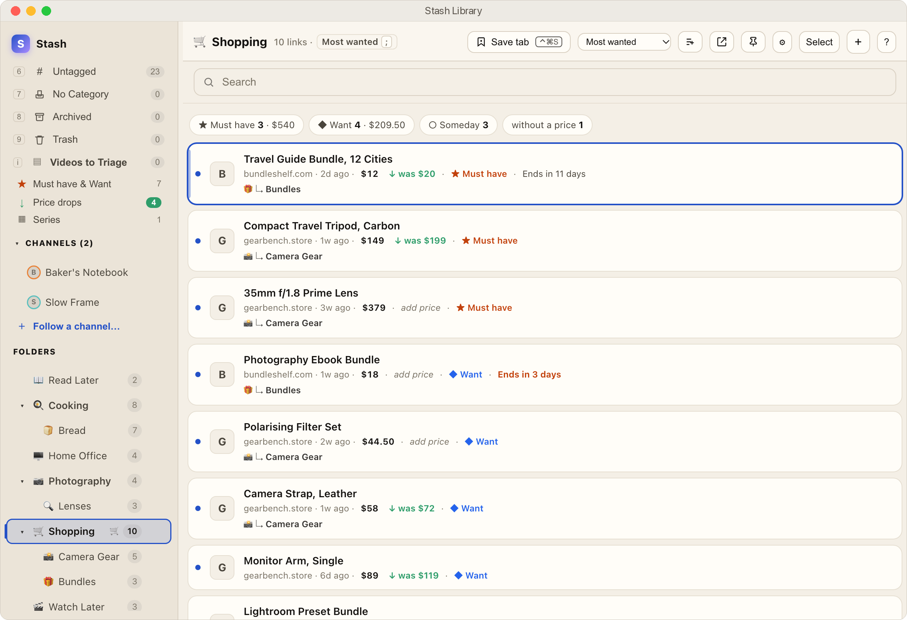
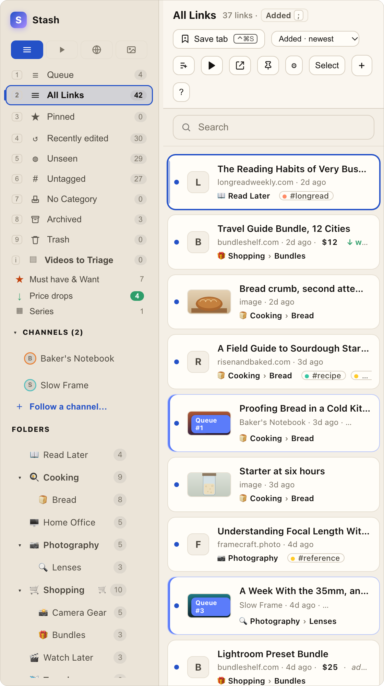
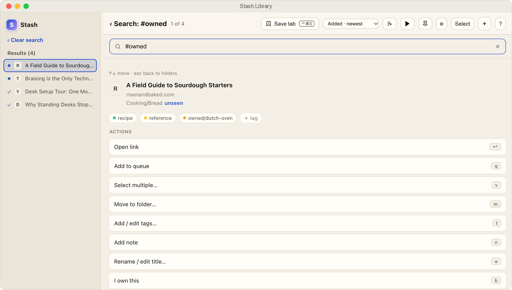

It tells you when the price drops.
Mark a folder as a shopping list and every link in it carries a price. Stash checks back on its own, and when something gets cheaper you see the old price right beside the new one.
Some deals have a deadline, and a bundle that closed on Sunday is simply gone. Stash reads the end date off the store’s page when the store publishes one, counts down the days, and lets you type one in when it doesn’t.

Every action has a key.
72 of them, and you never have to memorise one. Press ? for the whole list, or ⌘K and type what you want done. The ones that work from anywhere on your Mac are yours to change.
Anywhere on your Mac
- Save the tab you’re on⌃⌘S
- Search everything you’ve saved⌃⌘F
- Bring up the sidebar⌃⌘L
- Clip part of the screen⌃⌥⌘I
- Take this tab back out⌃⌘X
- Play or pause, from any app⌃⌥⌘Space
Getting around
- Do anything by name⌘K
- See every shortcut?
- Jump straight to a view1to9
- Previous or next folder[or]
- Undo a move, tag or delete⌘Z
On a link
- Open it↵
- Open it without leaving Stash⌘↵
- Move it to a folderm
- Tag itt
- Mark it seen or unseenu
- Archive it, kept but out of the waya
- Snooze it until a datez
- Remind me at a time⌘R
- Put it in the queueq
Tabs and videos
- Save the whole window as a session⇧S
- File the whole window, then close it⇧A
- Play a video inside Stashy
- Queue every video in view⇧Q
Search the way you think.
Type a few words and Stash matches titles, addresses and folders. Then narrow it down: a tag, a site, a folder, how long a video runs, or whether you’ve opened it yet. Press ⌃⌘F from any app and it’s there.
- Filters:
#tagsite:folder:channel:dur:<10 - Words that do the work:
unseenstaleduplicatesbrokenarchivedwatched - Keep any search as a smart collection that stays up to date by itself
What each part of that search means. Every word narrows it further.
It knows what you’ve actually opened.
Open a link from Stash and it’s marked seen, with no button to remember to press. Stash keeps count, so you can find the pages you keep going back to, and the ones you saved six months ago and never touched.
Done with something? Archive it. It leaves your lists but stays searchable, so nothing has to be deleted just to get out of the way.
- Snooze a link until a date, or have Stash remind you at a time
- Dead links are found for you, and the same link saved twice is caught
- ⌘Z undoes a move, a tag or a delete

It knows what you already own.
Point Stash at a folder of notes about your own things, kept in whatever app you like, and it learns the names. From then on a link about something you own is tagged with it the moment it arrives.
So the tutorial you saved eighteen months ago and the review you saved this morning end up under the same name, without you having to remember you own the thing in between.
It asks before trusting a word that could mean something else, and you can tell it to stop matching any name. Leave the folder unset and none of this appears.

Ask your AI what’s in your Stash.
Turn on one switch in Settings, copy the setup into Claude, and you can just ask. Stash answers with its own search, so Claude finds exactly what the search box would.
- Search your library, read any link, see the queue and the shopping list
- Save, file and tag too, only if you allow it. Nothing can ever be deleted
- Only apps on this Mac that you’ve given the token to can ask, and never a web page. Off until you turn it on
- Works with Claude Desktop, Claude Code and any app that speaks MCP
What have I saved about bread that I still haven’t opened?
Three things, all in Cooking › Bread: A Field Guide to Sourdough Starters, a 15-minute video, Proofing Bread in a Cold Kitchen, and a picture you clipped, Bread crumb, second attempt.
Anything on my shopping list get cheaper?
Four things. The biggest drop is the Compact Travel Tripod, now $149, down from $199. The Travel Guide Bundle is $12 and ends in 12 days.
An example. Claude asks Stash; Stash answers from your library.
A sidebar, not another app to remember.
Stash docks to the edge of your screen, right where you’re reading, which is the only moment you really know where a link belongs.
Press ⌃⌘S on any page and the save sheet opens with the title already filled in. Every tab you have open is listed too, so you can save one, save them all, or keep the whole window as a session and close it.
- Safari and Chrome, reading only the address and title of the tab you’re on
- Changed your mind? ⌃⌘X takes the page back out

A queue, and your hands stay on the keys.
Videos you save line up in a queue. Play one and it plays inside Stash, so the tab you were reading stays put. Play, pause and skip work from whatever app you’re in, and Stash remembers where you stopped, to the second.
Follow a channel with your own free YouTube key and its new videos wait in a pile for you to keep or drop, instead of arriving in a feed.

The same library, in your pocket.
Share anything into Stash from your phone and it lands in the folder you pick, with the same folders, tags and shopping lists you set up on the Mac. Your iPad gets a layout made for it, not a stretched phone.
Your Mac keeps the library, and your iPhone and iPad stay in step with it through your own iCloud. Nothing goes through a server of ours, because there isn’t one.


Smaller things you’ll meet later.
Clip part of the screen
Drag a rectangle and it’s saved like anything else. Save the same picture twice and Stash says so, instead of quietly filing a copy.
Titles fix themselves
A page saved before it finished loading gets its real title later, without you going back.
Folders you can see
Give a folder a colour and an icon, and nest them as deep as you like. Tags cut across the lot.
Obsidian, if you use it
Point Stash at a vault and it can clip a page to a note, or keep notes on a video while it plays.
A trash, not a shredder
Deleted links go to the Trash first, and ⌘Z brings back the last thing you did.
Five looks
Ink & Paper, Midnight Shelf, Slate Utility, Mono Mark and Teal Ledger, on the Mac and the phone alike.
Your links, on your Mac, in a file you can read.
Stash keeps your library on your own machine as plain, readable JSON. No account to make, and no server in the middle. What goes out is the pages Stash fetches to get you a title and a price, and, only if you connect one, what you ask your AI app about. If you ever stop using Stash, your links are still right there.